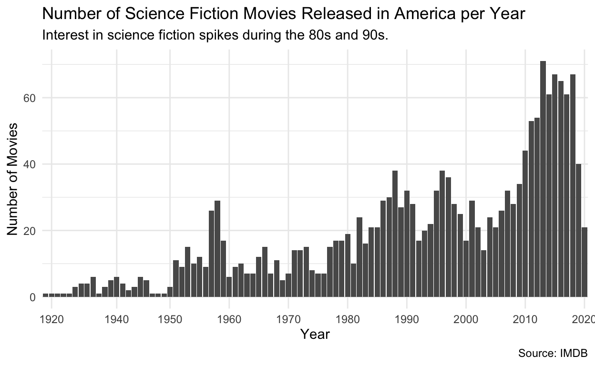
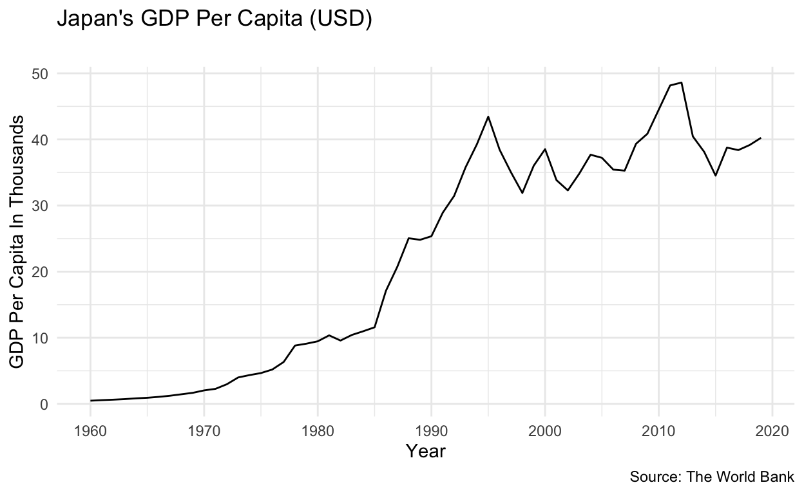
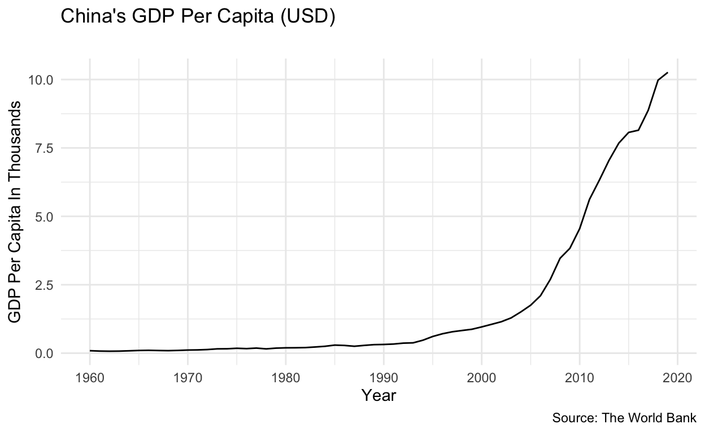
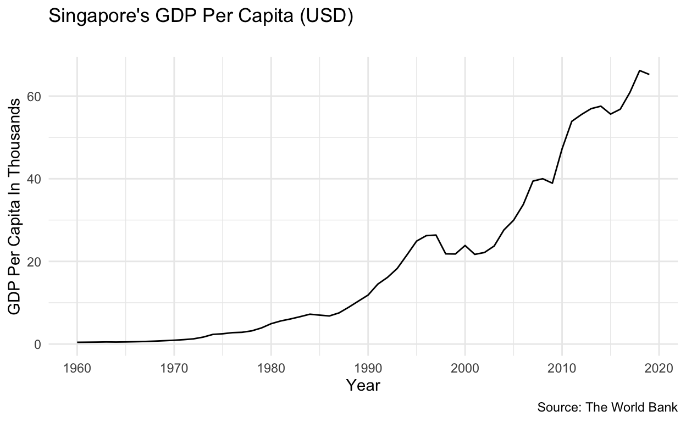
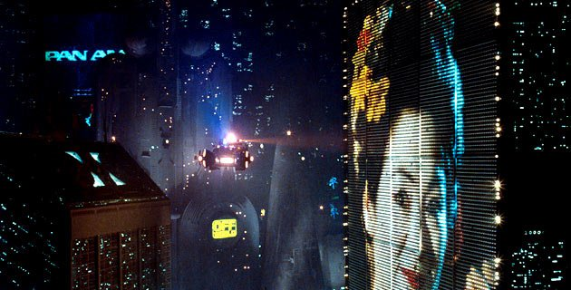

The first plot shows the number of science fiction movies each year. Filmmakers’ interest in science fiction increased in the 1980s and 1990s.

The next 3 graphs show GDP of Japan, China, and Singapore, which are countries that often serve as backdrops in science fiction movies. Films such as Blade Runner and Big Hero 6 both model their setting after Japanese cities, and many films use these backdrops to communicate bleak, apocalyptic futures.



Some events to note are Japan’s economic rise in the 1980’s and 1990’s, Singapore’s growth in the 1990s, and China’s growth in the late 2000s. The following graph shows the number of user ratings for each movie, and gives the title, release year, and plot summary.
Not all of the movies listed on the plot above contain blatant orientalist imagery, but most adopt more subtle ways of “othering” foreign countries and powers. A team of the “good guys” could be analagous to the US government, military, or police force, while the “villains” in the movie depict a foreign power. Cyborgs and AI will often adopt East Asian features and accents, which furthers stereotypes about East Asians (primarily East Asian women) being submissive, subservient, or unfeeling. Many of the post-2000 movies also shift their focus from East Asia to other regions of the world, most notably the Middle East and its relationship to the US military. The most significant example of this is the Marvel Cinematic Universe, which many have pointed to as glorifying the US airforce and depicting imperialism and colonialism in a positive light.
Above: Scene from Captain Marvel (2019)

Above: Scene from Blade Runner (1982)
Above: Scene from Cloud Atlas (2012)
Conclusion
Mass media affects our worldview long after we leave the movie theater. Science fiction has always been an imagining of our fears of the future, and pushing the blame for a fictional apocalypse on a real racial minority has off-screen consequences. Anxieties depicted in media inevitably result in violence, and Asian Americans have historically been forced to face the consequences of their fictional counterparts.